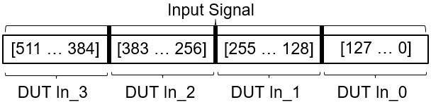
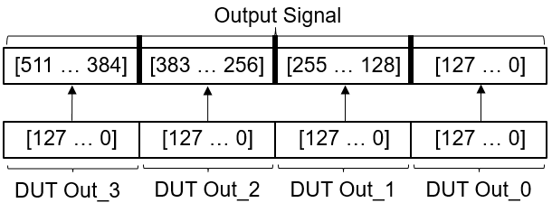

IP Core Generation Report for hdlcoder_multi_cycle_path_constraints
Target Interface Configuration
Target platform interface table:
| In1
|
Inport
|
int32
|
External Port
|
|
|
| In2
|
Inport
|
int32 (9)
|
External Port
|
|
|
| Out1
|
Outport
|
int64
|
External Port
|
|
|
Bit Packing Order
Following is the general representation of data packing order and data unpacking order for Vector Input and output cases for Internal IO, External IO and External port interfaces.
If it is assumed that an interface is mapped to one input(or output) port of the model which has a port width of 128 and port dimension of 4, then:
Following is the bit packing order to the DUT IP for Input vector case.

Following is the bit unpacking order from the DUT IP for Vector Output case.

It should be noted that the above instances are just for demonstration purpose and may not represent the actual mapped port width and port dimension.
IP Core User Guide
Theory of Operation
This IP core also support the
External Port
interface. To connect the external ports to the FPGA external IO pins, add FPGA pin assignment constraints in the Xilinx Vivado environment.
Xilinx Vivado Environment Integration
This IP Core is generated for the Xilinx Vivado environment. The following steps are an example showing how to integrate the generated IP core into Xilinx Vivado environment:
1. The generated IP core is a zip package file under the IP core folder. Please check the Summary section of this report for the IP zip file name and folder.
2. In the Vivado project, go to Project Settings -> IP -> Repository Manager, add the folder containing the IP zip file as IP Repository.
3. In Repository Manger, click the "Add IP" button to add IP zip file to the IP repository. This step adds the generated IP into the Vivado IP Catalog.
4. In the Vivado project, find the generated IP core in the IP Catalog under category "HDL Coder Generated IP". In you have a Vivado block design open, you can add the generated IP into your block design.
5. Connect the AXI4SlaveEmpty port of the IP core to the embedded processor's AXI master port.
6. Connect the clock and reset ports of the IP core to the global clock and reset signals.
7. Assign an Offset Address for the IP core in the Address Editor.
8. Connect external ports and add FPGA pin assignment constraints to constraint file.
9. Generate FPGA bitstream and download the bitstream to target device.
If you are targeting Xilinx Zynq hardwares supported by HDL Coder Support Package for Xilinx FPGA and SoC Devices, you can select the board you are using in the Target platform option in the Set Target > Set Target Device and Synthesis Tool task. You can then use Embedded System Integration tasks in HDL Workflow Advisor to help you integrate the generated IP core into Xilinx Vivado environment.